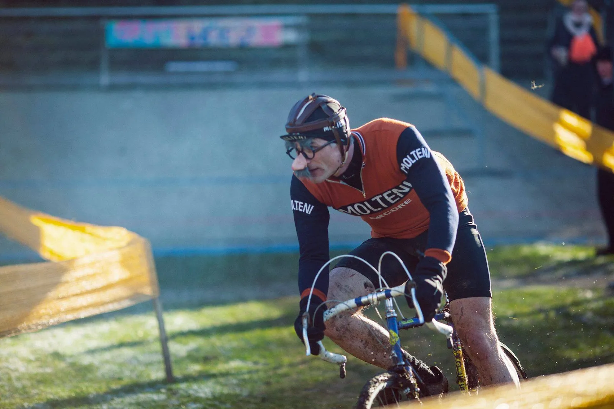
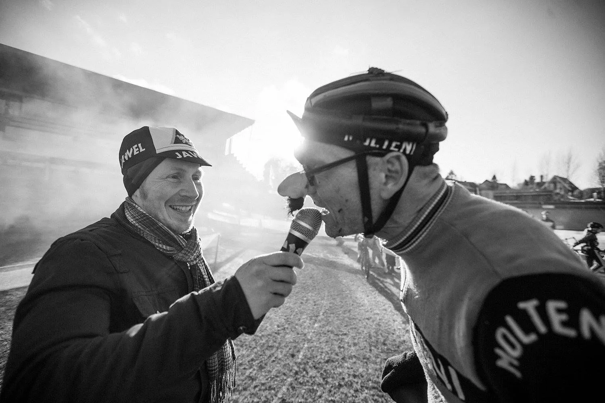

Fastelavnscross – Grote Prijs vol. VI

På en iskold februar lørdag stillede Squadra Moltenis Grane Maaløe og Niels Bjørnsteen op til Grote Prijs vol. VI på og omkring Aarhus Cykelbane.
Et bindegalt cykelcross-fastelavns-event med klare og utvetydige referencer til belgisk cykelcrossfest, når det er bedst: Cross, mudder, pommes, grillpølser og mørkt øl.
Grane og Niels stillede op i den åbne motionsklasse. Ikke kun for sjov – og med acrylnæse, skæg og briller. Men som altid – for at give den max gas.
Stilfund trods tennisalbue

Både Grane og Niels fik en perfekt start – og lagde benhårdt ud. Grane havde et mindre styrt i tredje sving (og et par senere) men kørte et stærkt løb. Speciel hans forceringer af de kunstige forhindringer må fremhæves.
Til trods for en smertende tennisalbue (som er kommet efter intens og utallige “løfte-cykel-over-forhindringer-øvelser” ved onsdagscross på Aarhus Cykelbane), var Grane klart den mest stilfulde rytter i den disciplin. Grane sluttede som nr. 16 (46 gennemførte).
Man kan snyde næse to gange i en papnæse, før den skal tømmes

Grote Prijs sluttede med en flot 4. plads
Niels pressede hårdt på i spidsen på første omgang. Faktisk lykkedes det ham, at ligge helt i front en del af første omgang. Men nogle hårde hunde i førergruppen trak fra – og Niels måtte slås om 3-4-5 pladsen.
Det blev vist til en 4. plads ved denne udgave af Grote Prijs. Niels kunne efter løbet bekræfte, at man kun kan snude næse to gange i en papnæse, før den skal tømmes…
Squadra Moltenis løjtnant Kasper Sørensen og soigneur Maria Winther var på pletten og ydede stærk og uvurderlig support – både under og efter løbet.
Efter løbet var der rift om at få et interview med Squadra Molteni. Her kunne Niels Bjørnsteen bl.a. bekræfte, at Squadra Molteni næste løb bliver Ronde van Borum, hvor de stiller til start med et frygtindgydende 9-mandshold.